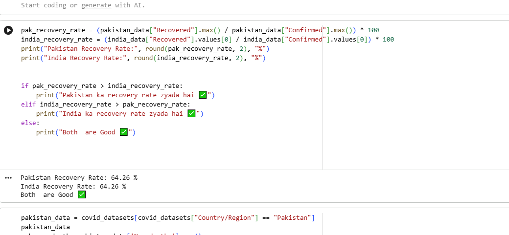
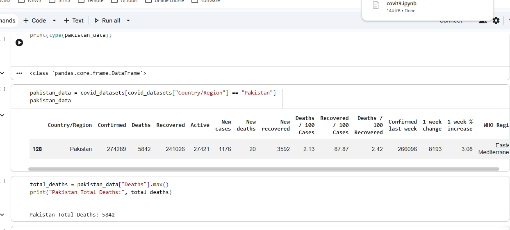
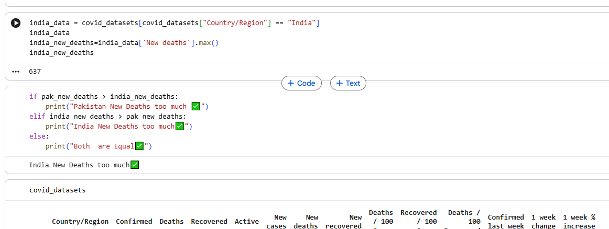
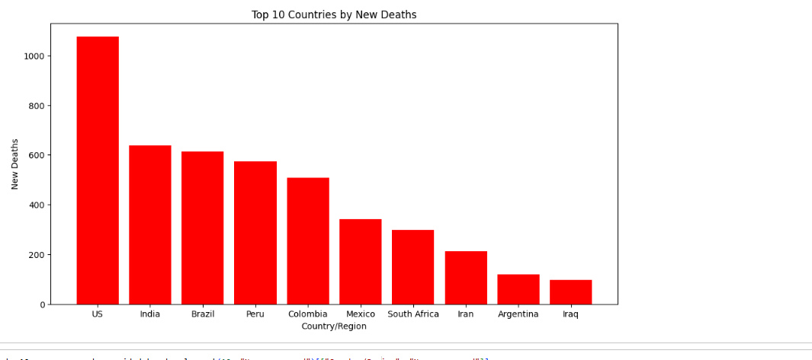

Data Analysis Project
Covid-19 Analysis
Analyzing COVID-19 data for Pakistan and comparing it with India in terms of deaths and recoveries. Also highlights the Top 10 most affected countries worldwide using Python visualizations.
Project Overview
This project is focused on analyzing COVID-19 data for Pakistan, and comparing it with India in terms of deaths and recoveries. The purpose of this analysis is to better understand how Pakistan has been impacted compared to other countries, and to visually represent these trends using charts.
In addition to country-specific comparisons, the project also highlights the Top 10 countries most affected by COVID-19 in terms of deaths and recoveries.
Tools & Technologies
- Python — core programming language
- Pandas — data cleaning & manipulation
- Matplotlib — data visualization & charts
- NumPy — numerical operations


Features of Analysis
- Pakistan-focused analysis of confirmed cases, deaths, and recoveries
- Comparison between Pakistan and India for total deaths
- Comparison between Pakistan and India for total recoveries
- Top 10 countries with the highest deaths
- Top 10 countries with the highest recoveries
- Visualization through bar charts for easy interpretation

Sample Visualizations
- Pakistan's data — confirmed, deaths, recovered
- Pakistan vs India comparison — deaths & recoveries
- Top 10 countries with the highest deaths
- Top 10 countries with the highest recoveries


Source Code
Full source code available on GitHub.
View on GitHub